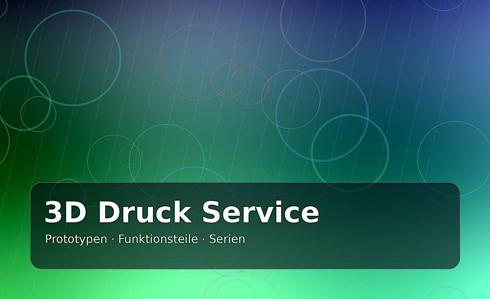
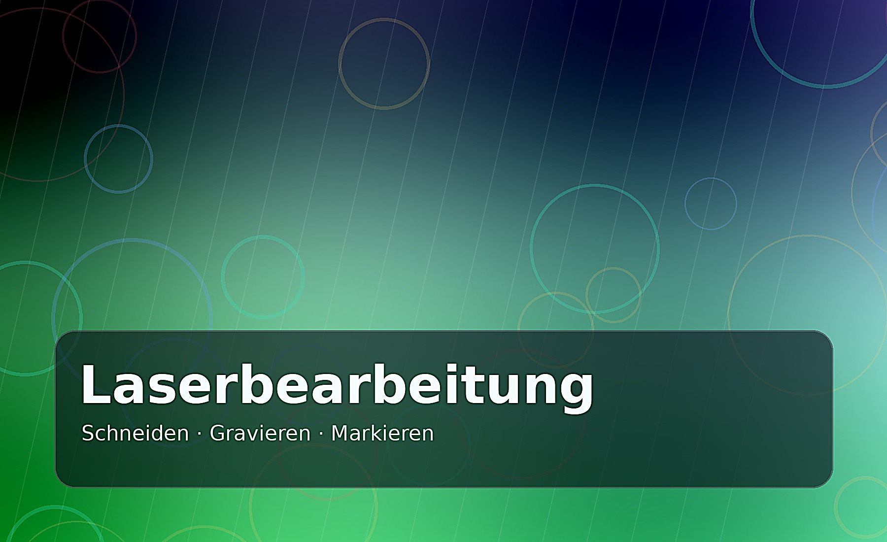
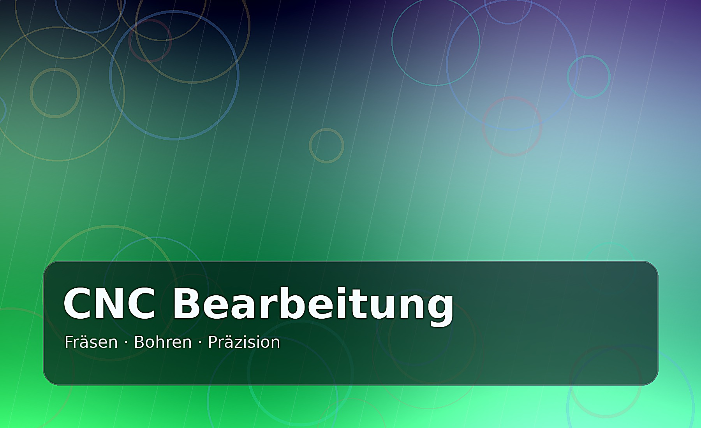

3D Druck Service
Prototypen, Funktionsmuster, Gehäuse, Halter, Vorrichtungen, Ersatzteile und Kleinserien.
- STL/STEP Prüfung
- Materialberatung
- FDM/SLA/SLS als Leistungsbereiche
Die Inhalte sind bewusst auf deutsche B2B-Kunden, Entwickler, Werkstätten, Startups und kleine Serien ausgerichtet.

Prototypen, Funktionsmuster, Gehäuse, Halter, Vorrichtungen, Ersatzteile und Kleinserien.

Konturen, Gravuren, Beschriftungen, Frontplatten, Schilder, Schablonen und Plattenzuschnitte.

Präzise Frästeile, Bohrbilder, Platten, Vorrichtungen und mechanische Prototypen.